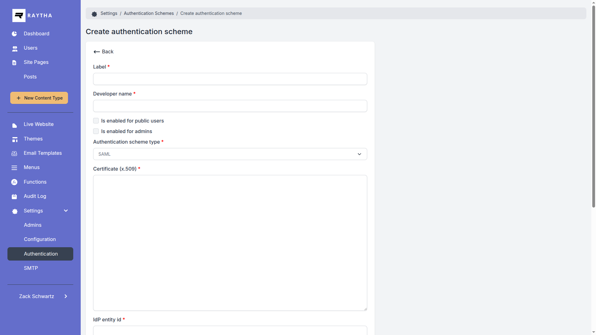

Let an identity provider such as Okta, Microsoft Entra ID, or Google Workspace sign people in to Raytha with SAML 2.0.
The admin shows a live setup guide next to the SAML scheme editor, with copyable ACS URLs built from your Website URL and the scheme's developer name. This page covers the same ground.
https://yoursite.com/account/login/sso/{developer_name}https://yoursite.com/raytha/login/sso/{developer_name}SAMLRequest, and RelayState when there is a return path. The request names the ACS URL for that audience, carries the service provider entity ID as its Issuer, and asks for the unspecified NameID format.SAMLResponse, with RelayState, to the ACS URL (HTTP-POST).RelayState when that is a local path, otherwise to the home page (users) or the admin dashboard (admins).Raytha does not track request ids, so IdP-initiated sign-in works too. Set the IdP's default RelayState to a local path to pick the landing page.

| Setting | Description |
|---|---|
| Label | Names the scheme in the admin list and on the admin sign-in page (Continue with …). Required. |
| Developer name | Part of the ACS and sign-in URLs. Lowercased, and every character other than a letter or digit becomes _. Cannot be changed after creation. |
| Login button text | The label of the scheme's button on the public login page. Required. |
| Sign in URL | The IdP's SAML single sign-on URL (HTTP-Redirect). Required. |
| Sign out URL | Optional. Raytha never calls it: signing out of Raytha ends only the Raytha session. Site templates can read it from CurrentOrganization.AuthenticationSchemes. |
| Enabled for users / admins | Who may sign in, by account type. Admin accounts need Enabled for admins; everyone else needs Enabled for users. The ACS URL only decides where people land. |
| SAML certificate | The IdP's X.509 signing certificate as PEM. Required. |
| Service provider entity ID (sent as Issuer) | Raytha's own identifier, not the IdP's. Raytha sends it as the Issuer of every SAML request, so it must equal the Entity ID, Audience URI, or Identifier you give the IdP. Any unique URI works. Older versions of the admin labelled this field IdP entity id. |
| Setting | Value |
|---|---|
| ACS URL (Reply URL, Single sign-on URL) | Users: https://yoursite.com/account/login/saml/{developer_name}Admins: https://yoursite.com/raytha/login/saml/{developer_name}Register one for every audience you enable. |
| SP entity ID (Audience URI, Identifier) | The value of the Service provider entity ID field, exactly. |
| NameID | Any format; Raytha asks for unspecified. Pick a value that never changes for the person. Required. |
| Binding | HTTP-POST to the ACS URL. |
| Signing | Sign the response, the assertion, or both. Do not encrypt the assertion. |
Raytha matches the attribute Name exactly and ignores NameFormat. A claim URI such as http://schemas.xmlsoap.org/ws/2005/05/identity/claims/emailaddress, or Email with a capital E, is not read.
| Attribute | Required | What Raytha does with it |
|---|---|---|
NameID (Subject) |
Required | Raytha links it to the account and matches on it first, within this scheme. A response without it fails. |
email |
Required | Must be a valid address. Finds the account when NameID doesn't, and becomes the account's email on every sign-in. |
given_name |
Optional | First name. New accounts without it are named SsoVisitor. |
family_name |
Optional | Last name. New accounts without it get a random last name. |
groups |
Optional | One AttributeValue per user group developer name. When at least one matches, the account's groups become exactly the matched set. |
Assertion. An encrypted assertion counts as none.NotBefore and NotOnOrAfter hold against the server clock, with no skew allowance.Audience, Recipient, Destination, InResponseTo, or the response Issuer.Paste the whole PEM file, including the BEGIN and END lines. The bare base64 body without them does not load. The admin trims surrounding whitespace when you save, because leading spaces also stop it loading.
-----BEGIN CERTIFICATE-----
MIIDpDCCAoygAwIBAgIGAX...
-----END CERTIFICATE-----When the IdP rotates its signing certificate, paste the new one.
email = user.email, given_name = user.firstName, family_name = user.lastName.groups, filtered to Okta groups named exactly like Raytha user group developer names.email = user.mail, given_name = user.givenname, family_name = user.surname. The default claims use long URIs that Raytha does not read.groups with source user.assignedroles instead, and give the app roles values equal to Raytha user group developer names.AADSTS75011 means Raytha's request asked for password authentication and the person's Entra session used another method. Launching the app from My Apps is IdP-initiated and avoids it.
email, First name → given_name, Last name → family_name. Optional group membership → groups.AUTH_RATE_LIMIT_PER_MINUTE (default 30).| Symptom | Cause |
|---|---|
| Failed authentication. | The signature didn't verify with the pasted certificate, the response is unsigned, it holds an encrypted or second assertion, or it is outside NotBefore/NotOnOrAfter. Check the server clock. |
| Missing 'email' attribute from saml assertion payload. | Add an attribute whose Name is exactly email. |
| An error page instead of a message | The certificate can't be parsed, or the assertion has no NameID. |
The IdP can't find the application (Entra AADSTS700016) |
The service provider entity ID doesn't match the IdP's Entity ID, Identifier, or Audience URI. |
The IdP rejects the reply URL (Entra AADSTS50011) |
Register the exact ACS URLs. Raytha builds the admin one from the Website URL in Configuration and the user one from the address the browser used. |
| The IdP says the request is malformed | Raytha base64-encodes its request without DEFLATE compression. If your IdP insists on compressed redirects, set Sign in URL to the IdP's app launch URL (IdP-initiated), which Raytha accepts. |
| Authentication scheme disabled for administrators. / … for public users. | The account's type isn't enabled on this scheme. |
| Admin sign-in shows a bare 403 page | The admin ACS hides the reason. Sign in through the users start link to read it; the checks are identical. |